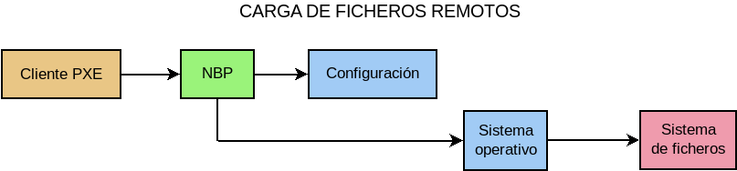

7.6.1. Conceptos¶
7.6.1.1. Componentes¶
Sólo atendiendo a la definición es posible establecer las tres necesidades del cliente para el arranque por red:
La obtención de una configuración dinámica de red, lo cual exige la existencia de un servidor DHCP.
La obtención de la información sobre cómno arrancar por red, o lo que es lo mismo, cuál es el servidor y el sistema que permitirán tal arranque. Esta segunda necesidad es la que satisface lo que llamaremos servidor PXE.
La descarga propiamente del sistema para su ejecución, lo cual exige un servicio de descarga de ficheros (típicamente TFTP).
Por tanto, si queremos construir un servicio de arranque por red, necesitamos montar varios servicios que cooperen entre sí.
7.6.1.2. Comparativa¶
Dado que estamos habituados a hacer arranques locales de nuestras máquinas y que están arranquen desde su disco duro o un cederrón o un pincho, es interesante comparar ambos arranques.
Cuando es el arranque local:
La BIOS va al dispositivo local que se haya indicado en la secuencia de arranque y carga un gestor de arranque (como, por ejemplo, grub).
Tal gestor de arranque lee del dispositivo local un fichero de configuración que declara los sistemas presentes y permite elegir uno de ellos[1].
El gestor carga el sistema seleccionado.
Dicho sistema es probable que, a su vez, necesite acceder a un sistema de ficheros local.
En caso de arranque remoto, las acciones son semejantes, pero la diferencia radica en que los ficheros no se obtienen de un dispositivo local, sino de la red, lo que obliga a montar el servicio con los componentes antes reseñados:
Gracias a la carga del cliente PXE de la ROM de la tarjeta, se obtiene una configuración de red del servidor DHCP y la ubicación de un ejecutable llamado NBP, que cumple la función del gestor arranque en el caso anterior. Es muy común que el NBP sea pxelinux, pero incluso podría hacerse uso de grub.
Se descarga el NBP y éste, por lo general, necesitará descargar un fichero de configuración que declare los sistemas de red arrancables para que podamos elegir uno de ellos.
El NBP carga el sistema seleccionado.
Dicho sistema es probable que, a su vez, necesite un sistema de ficheros el cual debe obtenerlo descargando un fichero de red.
La secuencia es, pues, paralela, con lo que centrarnos en las diferencias es centrarnos en el proceso de obtención de los ficheros:
Hay, pues, tres programas distintos que descargan:
El cliente PXE que, por lo general, sólo soporta TFTP.
El NBP que puede suportar otros protocolos como HTTP. Nosotros usaremos lpxelinux.0 que ofrece esta posibilidad.
El sistema operativo que podrá descargar con los protocolos que soporte cada cual.
7.6.1.3. Escenarios¶
Como son tres los servicios, son varios los escenarios posibles:
Que el servidor DHCP asuma el papel del servidor PXE, puesto que el protocolo permite facilitar al cliente la información sobre el arranque por red (fichero y servidor en el que está).
Que ambos servicios se mantengan separados, de manera que exista un servidor DHCP e, independiente de éste, un servidor PXE. Cuando esto es así, hay a su vez, dos posibilidades:
Que ambos servidores se encuentren en la misma máquina.
Que cada uno se encuentre en una máquina distinta.
Nota
En realidad, el servidor TFTP puede encontrarse en otra máquina distinta al servidor PXE, con lo que tendríamos que duplicar los escenarios. Sin embargo, aparte de no ser lo normal, la diferencia en la configuración no consistiría más que en indicar cuál es la IP de tal servidor y montar el servicio TFTP en tal máquina. Muy poca diferencia, pues, como para tenerlo en consideración.
Es obvio que el escenario más simple es el primero, puesto que solamente requiere un servidor DHCP, que proporciona la información sobre la red y el NBP y un servidor TFTP para la transferencia de ficheros. Sin embargo, es preciso notar que esta primera solución exige modificar la configuración del DHCP para añadir los parámetros de arranque remoto (servidor y nombre de fichero) y puede haber ocasiones en que esto no sea posible[2]. Cuando es así, es preciso recurrir al tercer escenario[3] que permite montar el servicio sin alterar en absoluto la configuración DHCP.
Así pues, dependiendo del control que tengamos sobre el servidor DHCP tendremos que optar por el primero o el tercer escenarios. Al segundo, en cambio, no tenemos por qué vernos abocados, puesto que si somos capaces de incluir un servidor PXE en la máquina que ejecuta el servidor DHCP, lo más probable es que también seamos capaces de controlar la configuración del propio DHCP. Aun con ello, puede interesarnos, si queremos mantener separada la configuración de red de la configuración del arranque remoto.
En estos apuntes dividiremos el estudio según estos tres escenarios:
PXE integrado en DHCP
PXE y DHCP independientes en máquinas distintas.
PXE y DHCP independientes en la misma máquina.
7.6.1.4. Software¶
Para poner en marcha el servicio necesitaremos:
Un servidor DHCP que puede ser tanto el servidor del ISC como dnsmasq. Para montar este servicio es más recomentable el segundo, ya que permite implementar los tres escenarios y hace innecesario cualquier otro software. El primero sólo puede actuar de servidor DHCP puro y sólo en el primer escenario puede facilitar la información de arranque. A pesar de ello, trataremos su configuración, ya que es posible que en nuestra red nos veamos obligados a usarlo como servidor DHCP por requerir alguna funcionalidad que él puede prestarnos y dnsmasq, no (p.e. DNS dinámico).
Cuando el servicio PXE sea independiente (segundo y tercer escenario), dnsmsaq.
Un servidor TFTP para transferir el NBP y un servidor HTTP para hacer lo propio con el resto de ficheros. Para lo segundo, usaremos nginx y para lo primero, depende:
Si la solución incluye dnsmasq, usaremos el propio dnsmasq, ya que incluye un servidor TFTP.
Si la solución no lo incluye (primer escenario sin dnsmasq), habrá que instalar un servidor TFTP independiente como tftpd[4].
Nota
En principio, toda la transferencia puede resolverse con TFTP, pero no es recomendable, porque no está pensado para la transferencia de archivos grandes[5].
Un NBP a fin de poder cargar un sistema operativo que haga funcionar la máquina. No diremos más porque le dedicaremos un epigrafe completo.
7.6.1.5. Servicio PXE¶
Ya se ha adelantado que este servicio es el encargado de proporcionar la información de arranque por red a la máquina, lo cual se traduce en indicarle qué NBP debe cargar y desde dónde debe hacerlo, o expresándolo de otro modo, una tupla TFTP/NBP.
Ciñéndonos exclusivamente a esta descripción, un servidor DHCP es capaz de proporcionar ambos datos, con lo cual podríamos pensar que tal servidor es capaz de proporcionar un servicio completo de PXE. Lo cierto es que no es así.
En principio, un servidor PXE real es capaz de proporcionar al cliente varias alternativas de arranque por red (o sea, varios tuplas TFTP/NBP), de manera que el cliente permita al usuario elegir una de ellas. No debe confundirse esto con la capacidad posterior que proporciona el NBP para elegir sistema de arranque, aunque ciertamente, pueden usarse ambas posibilidades para el mismo fin. Un servidor DHCP es incapaz de ello[6]: sólo envía un tupla TFTP/NBP y con ella deberá arrancar el cliente.
Por supuesto, se puede manipular la configuración del DHCP para que, dependiendo del cliente, se envíe una tupla u otra, pero para cada cliente tendremos una y sólo una tupla. Si el cliente PXE que usamos está incluido en la ROM de la tarjeta de red, entonces siempre se identificará del mismo modo y, consecuentemente, siempre recibirá la misma tupla. Un servicio PXE, por contra, envía varias de manera que posibilita que el cliente puede presentar al usuario un menú para que elija interactivamente qué NBP se descargará.
Es cierto que un NBP medianamente completo permitirá la selección de varios sistemas e incluso alguno de estos sistemas puede ser, no un sistema operativo, sino otro NBP, con lo que la limitación de usar un servidor DHCP para proporcionar la información de arranque no es tan grave. En realidad, la principal ventaja de disponer un servidor PXE independiente es la de separar la información de red (en el servidor DHCP) de la información de arranque, y esta ventaja se vuelve obligación cuando es imposible modificar la configuración del DHCP para añadir tal información.
Un servidor PXE escucha en el puerto 4011/UDP y recibe consultas del cliente PXE que usa el puerto 68/UDP[7]. Sin embargo, los clientes PXE no lo consultan automáticamente, sino que tienen que ser advertidos de que existe uno. Cómo se logran tal cosa, se explicará al analizar los tres escenarios descritos anteriormente.
Notas al pie